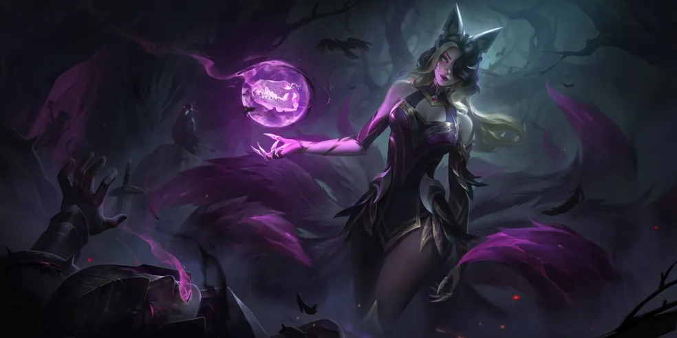

Introdução
Ahri é uma campeã do jogo League of Legends, conhecida por sua agilidade e poder de sedução. Ela é uma vastaya capaz de moldar magia em orbes de energia pura, brincando com suas presas antes de consumir sua essência vital.
Habilidades
- Orbe do Engano: Ahri lança e recolhe seu orbe, causando dano mágico.
- Fogo de Raposa: Ahri libera três fogos de raposa que rastreiam e danificam inimigos próximos.
- Encanto: Ahri assopra um beijo que danifica e encanta um inimigo, fazendo-o se mover em sua direção.
- Raposa Ágil: Ahri se lança para frente e dispara orbes em inimigos próximos com seus três últimos usos.